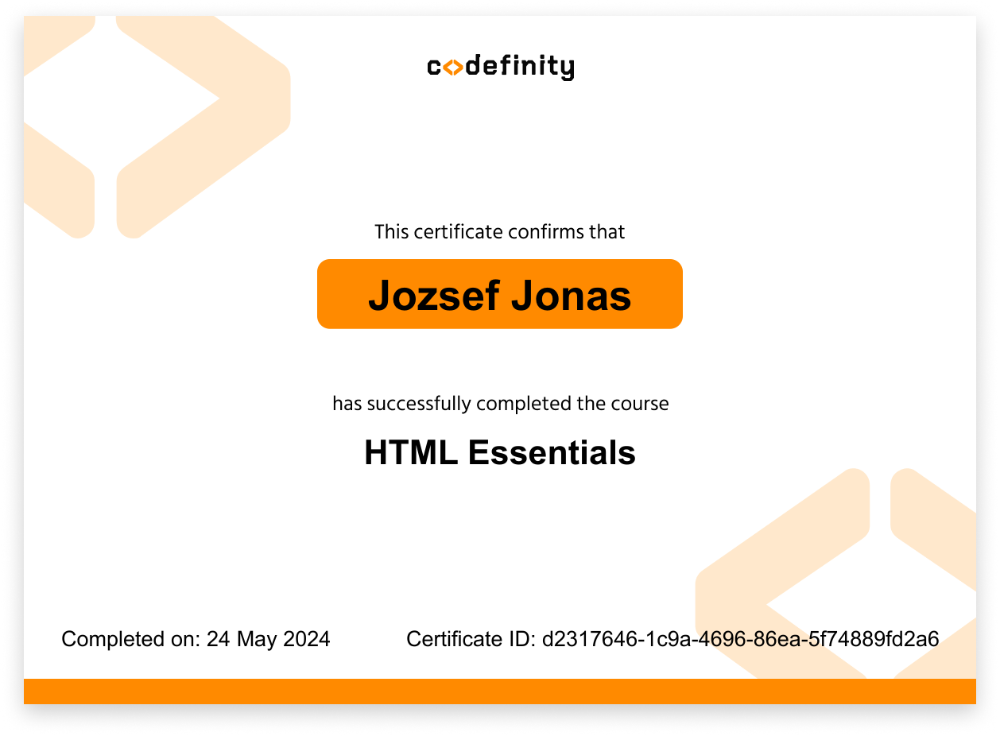
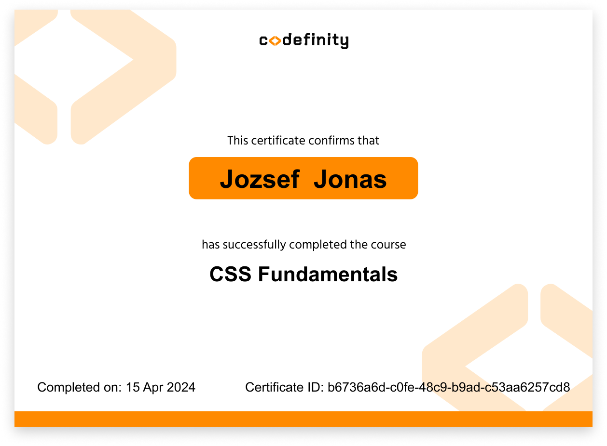
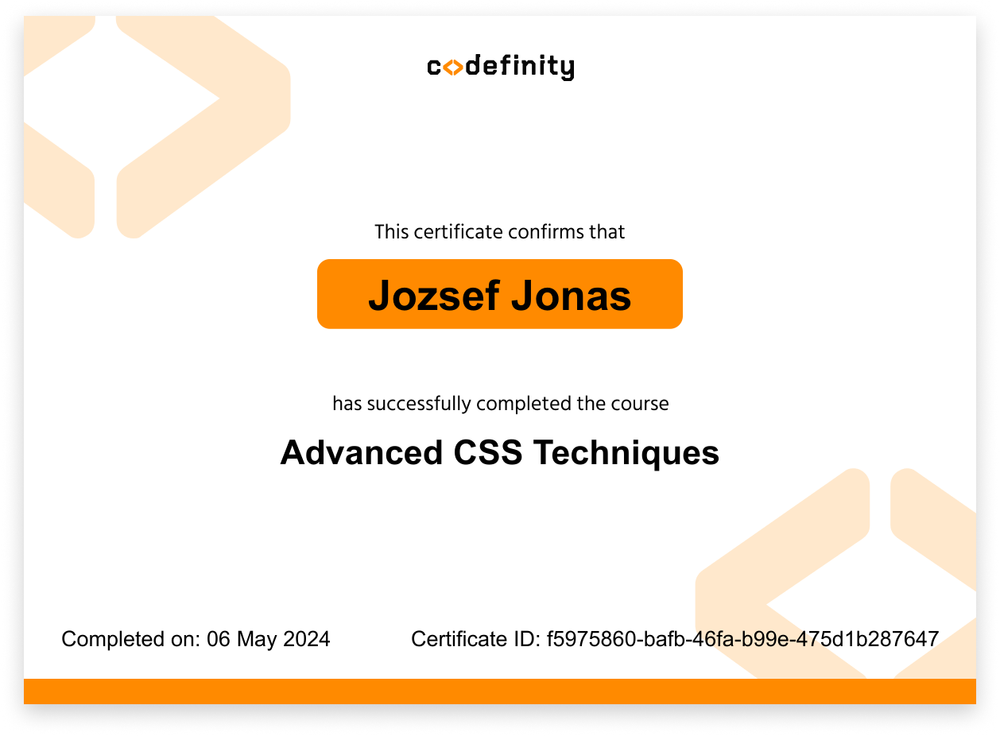
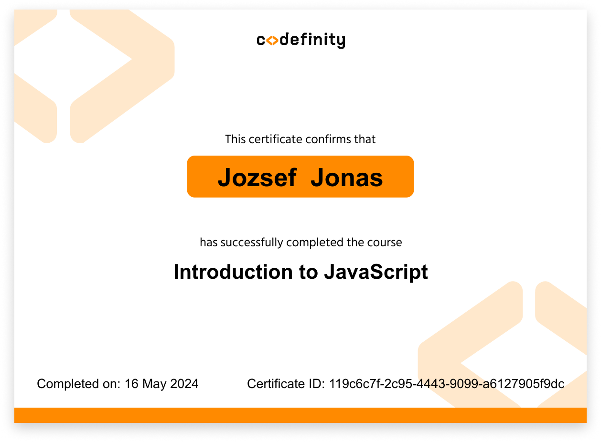
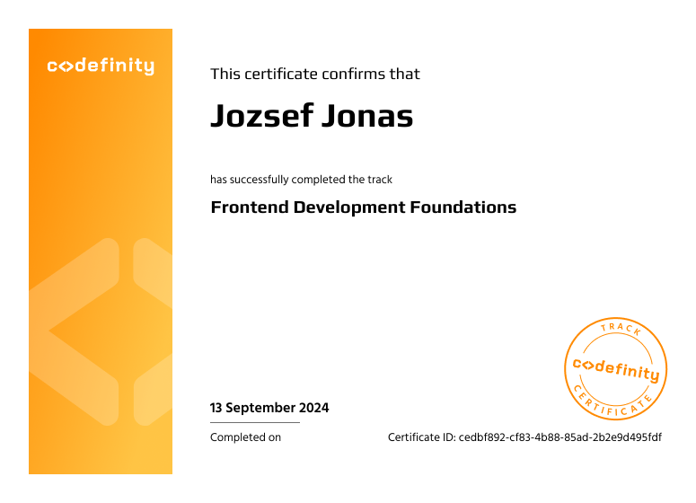

About
Building interfaces with intent.
My name is Jozsef Jonas, a 32-year-old Hungarian living in the Netherlands. I work at the intersection of design and frontend development, creating digital experiences that feel both polished and practical.
What I build
I design and develop fast, clean, responsive interfaces for startups and digital products. My goal is simple: structure, clarity, and an experience that feels smooth from the first click.
Visual thinking
Photography, video, and motion influence how I approach interfaces. I care about details, composition, and the emotional tone of a product.
Experience
Skills and tools
Projects
Selected work

Certificates
Learning path




